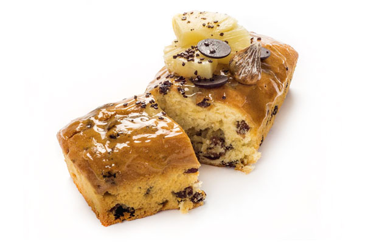

Plumcake Piña e Higos
INGREDIENTES
- 1Kg Sdelicake
- 0.350Kg Huevo
- 0.300L Aceite
- 0.125L Zumo de Piña
- 0.100L Moscatel
- 0.150kg Piña en dados
- 0.100kg Higos secos
PASOS A SEGUIR
Comienza batiendo SdeliCake junto con el zumo, moscatel y los huevos durante aproximadamente 3 minutos a velocidad media, utilizando el accesorio de pala. Luego, añade el aceite a la mezcla y continúa batiendo durante otros 3 minutos. Una vez que obtengas una mezcla homogénea y densa, incorpora los dados de piña y los higos secos troceados, y vierte la mezcla en los moldes. Finalmente, hornea a una temperatura de entre 180ºC y 190ºC, ajustando el tiempo de cocción según el tamaño de las piezas.